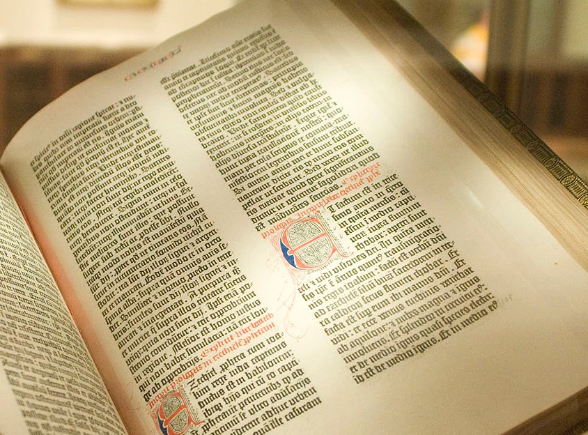
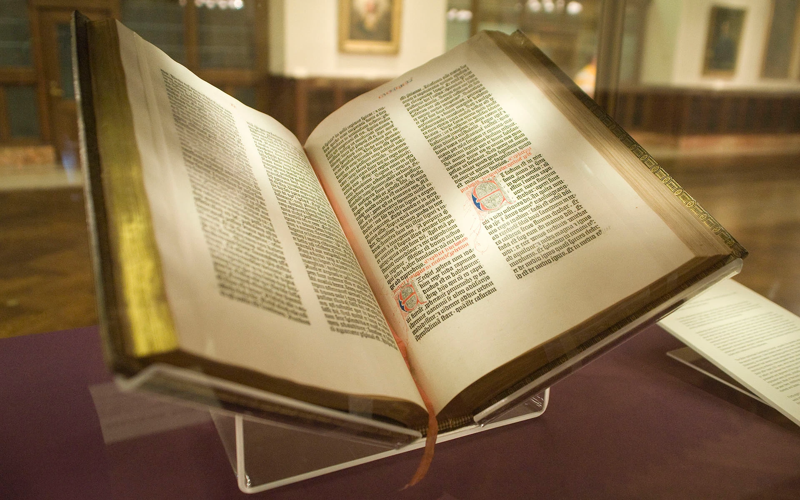
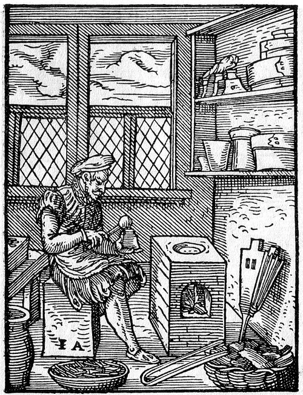
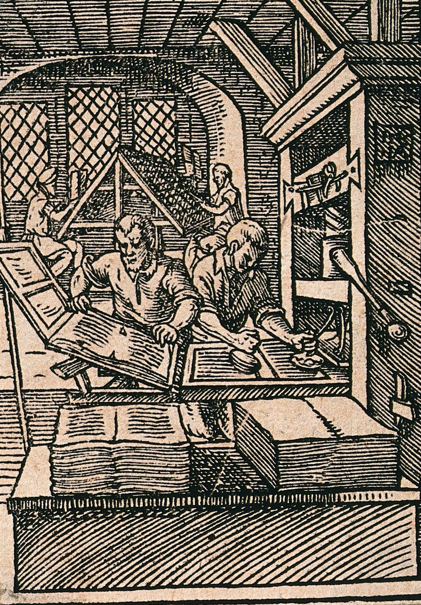

아직 펼치지 않은 카드모두의 말로 찍은 성경 · 1구텐베르크 성경1455년 무렵, 마인츠의 한 인쇄소가 금속 활자로 성경을 찍어 냈어요. 이 성경에는 숫자가 들어간 별명이 있어요. 무엇일까요?도장처럼 글자를 찍어서 만든 큰 책이래!
1450년대독일 마인츠 · 프랑크푸르트
구텐베르크 성경
1450년대 독일 마인츠에서, 손으로 베끼지 않고 금속 활자로 찍은 성경이 나왔어요. 강철에 새긴 글자 하나가 수백 개의 납 활자가 되고, 활자가 한 줄씩 모여 두 단 42줄의 한 쪽이 되었어요. 그 차례를 하나씩 따라가 봐요.
도장처럼 쇠로 글자를 만들어 꾹 찍었대. 글자 하나가 책 한 쪽이 되기까지, 같이 만들어 볼까?
검수 전 시안이에요(기준서 1판). 인쇄소의 차례는 도서관·박물관의 설명을 따랐고, 구텐베르크가 활자를 정확히 어떻게 부었는지는 아직 연구 중이라고 밝혔어요. 인쇄 차례 그림은 이 안내서가 그렸어요. 상상은 ‘눈 감고 상상해 보기’에만 썼어요.
시안 확인용카드 단계 미리 보기
1
쇠로 만든 글자
1450년대 마인츠에서 요하네스 구텐베르크(Johannes Gutenberg)는 책을 손으로 베끼는 대신 찍어 내는 일을 했어요. 1455년 11월 6일 마인츠에서 쓴 한 공증 문서(공증인이라는 법률가가 다툼의 내용을 공식으로 적어 둔 문서)는 이 일을 ‘책 만드는 일’이라고 불러요.
그 문서에는 돈을 댄 요한 푸스트(Johann Fust)가 구텐베르크에게 돈을 돌려 달라며 다툰 일이 적혀 있어요. 그 일에 돈을 들인 것으로 종이와 양피지(짐승 가죽을 얇게 펴서 말린 것), 먹, 그리고 이름을 밝히지 않은 장치가 나와요.


구텐베르크의 인쇄소를 그린 그림은 남아 있지 않아요. 위의 두 그림은 100여 년 뒤인 1568년, 요스트 암만(Jost Amman)이 새긴 목판화예요. 왼쪽은 화로 곁에 앉아, 한 손에 든 작은 틀(손 주형)에 다른 손의 국자로 녹인 금속을 붓는 활자공이에요. 오른쪽 인쇄소에서는 뒤쪽 창가에서 두 사람이 활자를 골라 줄을 맞춰 늘어놓고(이것을 ‘짠다’고 해요), 앞에서는 한 사람이 종이를 끼운 틀을 들어 올리고 곁의 사람이 둥근 먹 공으로 활자에 먹을 발라요.
쇠로 글자를 만들어 도장처럼 찍었대. 오른쪽 그림에서 먹을 바르는 사람을 찾아볼까?
물어보기도장을 찍어 본 적 있어? 무엇을 찍었어?
2
글자 하나가 한 쪽이 되기까지
구텐베르크가 찾은 것은 같은 글자를 수백, 수천 개 똑같이 만들어 내는 길이었어요. 강철 도장(펀치), 글자 자국을 낸 구리 틀, 그리고 손에 들고 녹인 금속을 붓는 작은 틀(손 주형)이 그 길이에요. 아래 단추를 누를 때마다 한 차례씩 해 볼 수 있어요.
구텐베르크가 남긴 설명서는 없어요. 이 차례는 뒷날 인쇄소의 기록과 남은 책을 바탕으로 도서관과 박물관이 설명하는 방법이에요. 활자를 정확히 어떻게 부었는지는 지금도 연구가 이어지고 있어요.
단추를 누를 때마다 한 차례씩 만들어져요. 글자 하나가 거꾸로(거울에 비친 것처럼 좌우가 바뀐 모양), 바로, 다시 거꾸로 되었다가 마지막에 종이 위에 바로 서는 것을 눈여겨보세요.
이 안내서가 그린 인쇄 차례 · 미국 의회도서관 블로그(2024)와 모건 도서관의 설명을 바탕으로 · 글자는 알아보기 쉽게 요즘 글꼴로 그렸어요
글자 하나의 모습
- 강철 끝: 거꾸로 볼록
- 구리 틀: 바로 오목
- 납 활자: 거꾸로 볼록
- 종이: 바로 선 글자
- 붉은 제목: 손글씨
다 만들었어요. 강철에 거꾸로 새긴 글자 하나가, 구리 틀과 납 활자를 거쳐 종이 위에 바로 섰어요.
쇠 막대에 글자를 거꾸로 새기고, 구리에 꾹! 그 틀에 녹인 쇠를 부으면 글자가 하나 생겨.
물어보기도장 글자는 왜 거꾸로 새겨야 할까?
3
40줄에서 42줄로
네 사람이 성경을 거의 같은 네 부분으로 나누어 한꺼번에 짰다고 봐요. 처음에는 한 단에 40줄을 넣다가, 글자 높이를 조금 줄여 42줄로 바꾸었어요. 이 성경을 ‘42줄 성경’이라고 부르는 까닭이에요.
열한 묶음(종이 여러 장을 포개 접은 묶음)쯤 찍었을 때 찍을 부수를 늘리기로 하고, 이미 찍은 묶음은 다시 짜서 찍었어요. 그렇게 종이 책이 적어도 120부, 양피지 책이 40부쯤 나왔다고 봐요. 성경 한 부는 큰 종이 643장(앞뒤로 1,286쪽)으로, 두 권으로 묶게 만들었어요.
붉은 제목도 처음에는 찍으려 했어요. 하지만 붉은색은 같은 종이를 한 번 더 찍어야 해서 손이 너무 많이 갔고, 곧 그만두었어요. 그래서 붉은 제목과 머리글자(글 첫머리를 크게 꾸민 첫 글자)는 사람이 손으로 써넣었어요. 위 사진은 뉴욕 공공도서관의 레녹스 본(수집가 제임스 레녹스가 사들인 한 부)이에요. 오른쪽 쪽의 붉은 글씨와 푸른 머리글자도 그렇게 들어갔어요.
처음엔 40줄, 나중엔 42줄! 빨간 글씨는 사람이 손으로 썼대.
물어보기사진에서 빨간 글씨를 몇 군데 찾을 수 있어?
4
안경 없이도
1454년 10월, 프랑크푸르트에서 신성 로마 제국의 제후들이 모이는 제국 회의가 열렸어요. 한 해 전 콘스탄티노플을 차지한 오스만 제국에 맞설 일을 의논하는 자리였어요. 그 무렵 프랑크푸르트에서 한 ‘놀라운 사람’이, 아직 책으로 묶지 않은 갓 찍은 성경 낱장 묶음 여러 개를 사람들에게 보여 주었어요.
회의에서 황제를 대신해 연설한 사람은 이탈리아 시에나의 주교 에네아 실비오 피콜로미니(Enea Silvio Piccolomini, 뒷날 교황 비오 2세)예요. 그는 이듬해 3월 12일, 오스트리아의 비너노이슈타트에서 로마에 있는 친구 카르바할 추기경(교황을 돕는 높은 성직자)에게 편지를 썼어요. 유럽에서 찍은 책을 본 사람이 남긴 가장 이른 기록으로 꼽히는 편지예요.

“저는 다 만든 성경은 보지 못했고, 여러 권에서 나온 낱장 묶음만 보았습니다. 글씨가 아주 깨끗하고 바르며 틀린 데가 없어서, 추기경님께서도 애쓰지 않고 안경 없이도 읽으실 수 있을 것입니다.”
피콜로미니가 카르바할 추기경에게 보낸 편지(1455년 3월 12일) · 에릭 화이트의 영어 번역(2025)을 이 안내서가 옮김
위 벽화는 50여 년 뒤 핀투리키오(Pinturicchio)가 시에나 대성당 도서관에 그린 피콜로미니의 모습이에요. 가운데 흰 뾰족 모자(주교관)를 쓴 사람이 그예요. 파란 왕관을 쓴 사람이 황제 프리드리히 3세예요. 피콜로미니가 황제에게 아내가 될 포르투갈의 엘레오노르를 소개하는 장면이에요.
1454년 프랑크푸르트에서 갓 찍은 낱장 묶음을 본 사람이라면, 무엇부터 물어볼까요?
이탈리아에서 온 주교님이 갓 찍은 성경을 보고 편지를 썼대. 글씨가 아주 깨끗했대!
물어보기안경 없이도 읽을 수 있는 글씨는 어떤 글씨일까?
눈 감고 상상해 보기
창 너머로 흐린 빛이 들어와요. 축축한 종이 냄새와 기름 먹 냄새가 섞여 있어요. 나무 나사가 삐걱 돌아가고, 손잡이를 당겼다 놓는 소리가 나요. 종이를 천천히 들어 올리자, 까만 글자 두 단이 반짝여요.
눈을 감아 봐. 끼익, 나무 나사가 돌아가. 종이를 살짝 들어 올리면, 까만 글자가 반짝!
나의 자리
압착기 손잡이를 당긴 뒤 첫 쪽을 들어 올리는 사람 곁에 서 있다면, 무엇을 묻고 싶나요?
도장을 꾹 찍고 들어 올릴 때처럼, 첫 쪽을 들어 올리면 어떤 기분일까?
마음에 닿는 한 줄을 고르거나 직접 써 보세요. 한 줄을 남기면 이 자리의 도장이 찍혀요. 이 기기에만 저장돼요.
더 깊이
이야기를 보다 궁금해질 만한 것들이에요. 답을 읽거나 짧은 영화로 보세요.
돈을 댄 푸스트와 다툰 뒤, 구텐베르크는 어떻게 됐어요?
다 만들기도 전에 살 사람이 정해졌다는데, 누가 샀어요?
뒷이야기
아직 펼치지 않은 이야기예요. 누르면 이야기가 펼쳐지고 색이 돌아와요. 더 알고 싶으면 근거를 따라가 보세요.
다 펼치면, 다음에 오실 때 새 이야기가 찾아와요.
오늘의 뒷이야기는 여기까지예요. 다음에 오시면 새 이야기가 기다리고 있어요.
펼친 뒷이야기 · 누르면 다시 볼 수 있어요
더 찾아보기
기록마다 다른 점
몇 부를 찍었나 피콜로미니는 158부라는 말과 180부라는 말을 함께 들었다고 적었어요. 니덤과 화이트는 종이 책이 적어도 120부, 양피지 책이 40부쯤이라고 보고, 다른 학자들은 160~185부쯤으로 셈해요.
어떻게 부었나 펀치·구리 틀·손 주형으로 부었다는 설명이 오래 이어져 왔어요. 하지만 모건 도서관은 최근 연구가 구텐베르크의 활자를 정확히 어떻게 부었는지 다시 묻고 있다고 해요.
빌린 돈인가, 함께 넣은 돈인가 1455년 공증 문서에서 푸스트는 빌려준 돈이라고 했고, 구텐베르크는 둘이 함께 벌인 일에 넣은 돈이 대부분이라고 맞섰어요.
직접 가 보기
확인한 날 · 2026년 11월 18일 · 바뀌기 쉬운 정보라 정기적으로 다시 확인해요
독일 마인츠 구텐베르크 박물관은 새 건물을 짓는 동안, 2024년 11월 말부터 자연사 박물관 건물에서 임시 전시를 하고 있어요. 보물실에서는 구텐베르크 성경 두 권을 견주어 볼 수 있어요. 관람 시간은 가기 전에 누리집에서 확인하세요.
사진의 레녹스 본은 뉴욕 공공도서관의 희귀본실이 가지고 있어요. 전시 여부는 가기 전에 확인하세요.
일곱 차례 끝까지 금박
글자 하나가 책 한 쪽이 되기까지, 일곱 차례를 끝까지 해 보면 카드에 금박이 입혀져요.
일곱 차례를 끝까지 해 보기
그 자리의 물음 채색
둘 가운데 하나만 해도 카드가 채색돼요.
1454년 프랑크푸르트의 낱장 앞에서 하나 물어보기
아이와 함께 ‘영화처럼 보기’를 끝까지 보기
근거 보기 (17)
- 모건 도서관 「Who was Gutenberg?」 — 1455년 11월 헬마슈페르거 공증 문서, 결과는 알려지지 않았지만 담보로 잡힌 인쇄소를 푸스트가 넘겨받은 듯, 대주교의 연금과 곡식·포도주·옷, 1468년 죽을 때 활자와 인쇄 도구를 갖고 있었음, 투르크와의 전쟁을 위한 면벌부
- 브리태니커: Johannes Gutenberg — Printing of the Bible — 페터 쇠퍼는 구텐베르크의 가장 솜씨 좋은 일꾼이자 1455년 재판의 증인, 1457년 8월 14일 마인츠 시편집이 찍은 사람 이름을 단 유럽의 첫 인쇄본(푸스트·쇠퍼), 1465년 1월 대주교의 연금
- 구텐베르크 협회(마인츠): Gutenberg’s final years — 1465년 대주교 아돌프 2세의 신하, 해마다 옷·곡식·포도주, 그가 찍었다고 보는 인쇄물에 이름이 없음, 1468년 초 세상을 떠남, 생김새를 알 수 없음
- 구텐베르크 박물관(마인츠): Gutenberg and his time in data — 1452~1454년 약 180부, 1454/55년 키프로스 면벌부, 1455년 소송으로 성경과 인쇄소 대부분을 잃었을 것, 1457년 푸스트·쇠퍼의 시편집, 1465년 대주교, 1468년
- 에릭 화이트(2018), The Gutenberg Bible, 550 Years after Gutenberg(Bible and Interpretation) — 처음 주인은 대부분 교회·수도원·수도회, 1499년 쾰른 연대기, 1690년대 헨드라이히, 마자랭 성경, 레녹스 본, 남은 부수
- 에런 프랫(2017), 해리 랜섬 센터(텍사스 대학) 블로그 「Instructions for Reading Aloud the Gutenberg Bible」 — 카르투시오회의 책, 여백의 요일별 읽기 표시, 에스겔서 첫머리 여백에 읽는 이가 틀리지 않게 살피라는 메모, 함께 소리 내어 읽을 책으로 만들었을 것, 안경 없이 읽을 큰 글씨는 읽는 이에게 반가웠을 것
- 브리태니커: Fall of Constantinople — 1453년 5월 콘스탄티노플이 오스만 투르크에 넘어감
- 존 갠디(2025), 존 라일랜즈 도서관 블로그 — 피콜로미니의 1455년 3월 12일 편지(비너노이슈타트에서 카르바할 추기경에게): 프랑크푸르트의 ‘놀라운 사람’, 다 만든 성경은 못 보고 여러 권의 낱장 묶음만 봄, 아주 깨끗하고 바르며 틀린 데 없음, 안경 없이도, 158권·180권, 사 보겠다는 말과 먼 거리·다 정해진 살 사람(에릭 화이트 2025 번역)
- 폴 니덤·에릭 화이트, 「Gutenberg & After」(프린스턴 대학 도서관 2019 전시 · 옥스퍼드 Cabinet) — 네모난 고딕 글꼴, 큰 종이 643장·두 권, 40줄에서 글자 높이를 줄여 42줄, 네 식자공, 열한 묶음 뒤 부수를 늘려 다시 찍음, 종이 120부 이상·양피지 40부쯤, 1455년 11월 6일 마인츠 공증 문서(푸스트의 소송, ‘책 만드는 일’, 종이·양피지·먹·이름 없는 장치, 구텐베르크의 반론), 지난가을 프랑크푸르트의 ‘놀라운 사람’
- 패트릭 헤이스팅스(2024), 미국 의회도서관 블로그 「Just My Type」 — 강철 펀치에 거꾸로 새기고 둘레를 갈아 냄, 구리에 박은 틀은 바로 읽힘, 손 주형에 틀을 끼움, 주로 납인 쇠, 같은 활자를 여러 번, 펀치와 틀이 활자보다 귀함, 칸 나눈 상자
- 모건 도서관 「The Invention of Printing」 — 활자를 붓고 한 자·한 줄씩 짜는 기술, 정확히 어떻게 부었는지 최근 연구가 물음, 270가지쯤의 글자, 기름 먹과 금속 성분, 나사 압착기(포도주·제지), 붉은 제목을 찍으려다 그만둠
- 미하엘 폰 코타쇤베르크 엮음, 피콜로미니 연설 「Constantinopolitana clades」(1454년 10월 15일 프랑크푸르트) — 1454년의 세 제국 회의, 황제의 대변인 피콜로미니, 오스만에 맞설 십자군 의논
- 웰컴 컬렉션: 요스트 암만 「Der Buchdrucker」(1568, 퍼블릭 도메인 마크) — 이 카드의 인쇄소 그림, 창가에서 활자를 짜는 두 사람, 종이를 준비하며 먹을 바르는 두 인쇄공, 찍은 종이와 안 찍은 종이 더미
- 웰컴 컬렉션: 요스트 암만 「Der Schrifftgiesser」(1568, 퍼블릭 도메인 마크) — 이 카드의 활자공 그림, 라틴·고딕·그리스 활자를 만든다는 글, 오른쪽의 쇠 녹이는 화로
- 마인츠시: 구텐베르크 박물관 — 2024년 10월 초 옛 건물을 닫고 11월 말 자연사 박물관 건물에서 임시 전시, 보물실의 구텐베르크 성경 두 권(2026년 11월 18일 확인)
- 위키미디어 공용: 핀투리키오 벽화 사진 정보(피콜로미니가 프리드리히 3세에게 엘레오노르를 소개함, 시에나 대성당 피콜로미니 도서관), 레녹스 본 사진(뉴욕 공공도서관 희귀본실)
- 위키백과 Gutenberg Bible — 길잡이로만(160~185부라는 셈)
그림·사진·소리 출처
- 그림: 요스트 암만(1568) · 퍼블릭 도메인 · 웰컴 컬렉션
- 그림: 요스트 암만(1568) · 퍼블릭 도메인 · 웰컴 컬렉션
- 그림: 핀투리키오 · 사진: Vvlasenko(Ввласенко) · CC BY 4.0 · 위키미디어 공용
- 사진: NYC Wanderer (Kevin Eng) · CC BY-SA 2.0 · 위키미디어 공용
- 사진: NYC Wanderer (Kevin Eng) · CC BY-SA 2.0 · 위키미디어 공용
- 사진: NYC Wanderer (Kevin Eng) · CC BY-SA 2.0 · 위키미디어 공용
- 사진: NYC Wanderer (Kevin Eng) · CC BY-SA 2.0 · 위키미디어 공용
- 그림: 요스트 암만(1568) · 퍼블릭 도메인 · 웰컴 컬렉션
- 그림: 요스트 암만(1568) · 퍼블릭 도메인 · 웰컴 컬렉션
- 그림: 요스트 암만(1568) · 퍼블릭 도메인 · 웰컴 컬렉션
- 그림: 요스트 암만(1568) · 퍼블릭 도메인 · 웰컴 컬렉션
- 그림: 요스트 암만(1568) · 퍼블릭 도메인 · 웰컴 컬렉션
- 그림: 요스트 암만(1568) · 퍼블릭 도메인 · 웰컴 컬렉션
- 그림: 요스트 암만(1568) · 퍼블릭 도메인 · 웰컴 컬렉션
- 그림: 핀투리키오 · 사진: Vvlasenko(Ввласенко) · CC BY 4.0 · 위키미디어 공용
- 그림: 핀투리키오 · 사진: Vvlasenko(Ввласенко) · CC BY 4.0 · 위키미디어 공용
- 사진: NYC Wanderer (Kevin Eng) · CC BY-SA 2.0 · 위키미디어 공용
‘처음 만나는 기독교 문화’의 깊은 카드예요. 카드 단계와 남긴 글은 이 기기에만 저장돼요.